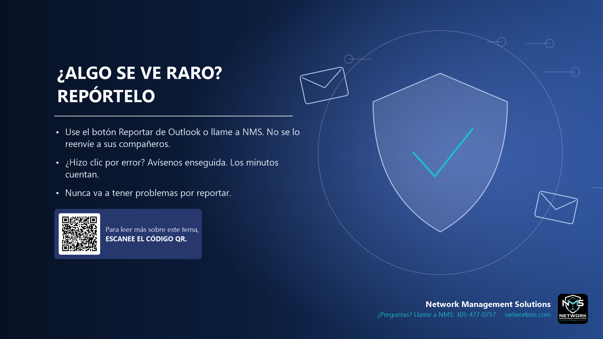

¿Algo se ve raro? Repórtelo

- Use el botón Reportar de Outlook o llame a NMS. No se lo reenvíe a sus compañeros.
- ¿Hizo clic por error? Avísenos enseguida. Los minutos cuentan.
- Nunca va a tener problemas por reportar.
Reportar un mensaje sospechoso ayuda a proteger a toda la empresa. En Outlook, use Reportar > Phishing (o Reportar mensaje). Si no está seguro, llame a NMS.
Si hizo clic en un enlace, escribió su contraseña o abrió un adjunto, llámenos de inmediato. Mientras antes lo sepamos, más rápido podemos bloquear la cuenta y detener el daño.
Nadie tiene problemas por reportar, aunque al final sea un mensaje seguro.
¿Tiene dudas sobre un correo, mensaje o llamada? Llame a NMS antes de hacer clic: 305-477-0757 · networkms.com